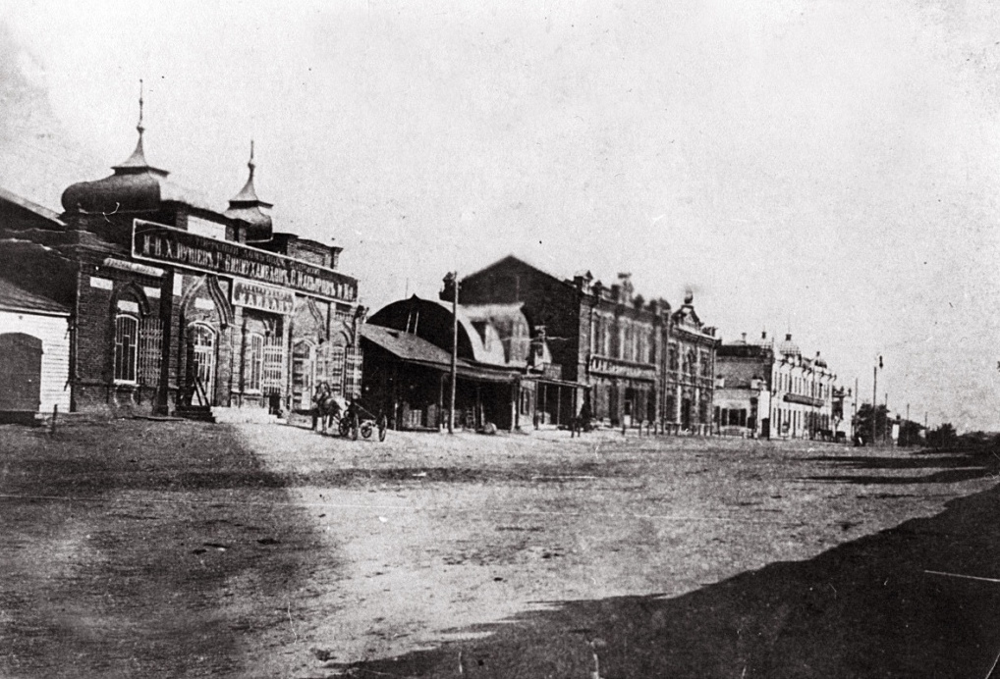

Kostanay was founded by Russian settlers in 1879 and named Nikolaevsk, in honor of Tsar Nicholas II.
In 1888, the town had more than 3,000 inhabitants involved in the building of a mill and a brewery, which are still operational. In 1893, Kustanay was granted city status. The Red Army took control in 1918 and changed the city's name to Kustanay. The Kustanay Region was established in 1936 with its administrative center in Kustanay. Six years after fall of Soviet Union, Kazakhstan renamed it to Kostanay. In 2009, the city population was 214,916 (2009 Census results).
In 1950 the population of the city and the area has increased markedly in connection with the development of virgin lands. In the postwar period to date in the Kostanai region continue to meet the huge harvests of cereal crops. On the eastern edge of town, on the part of the Tobol River was established label with a five-meter numbers like this: "385 thousand tons of grain, where the number of tons updated every week.
